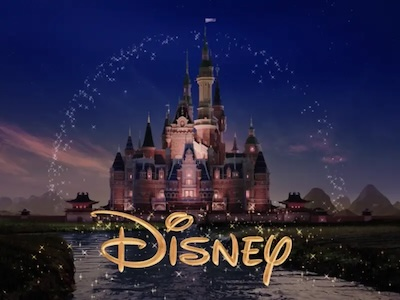

History of Disney Films
Walt Disney was always creating cartoons. For example, his first series was Alice Comedies. He then created Mickey Mouse and Mickey Mouse became extremely popular. This was the catalyst that led Walt Disney to create the first princess movie, Snow White and the Seven Dwarfs. This is when Disney Motion Pictures was established to create more and more Disney films.